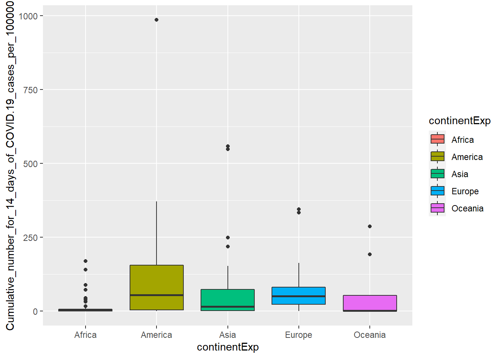
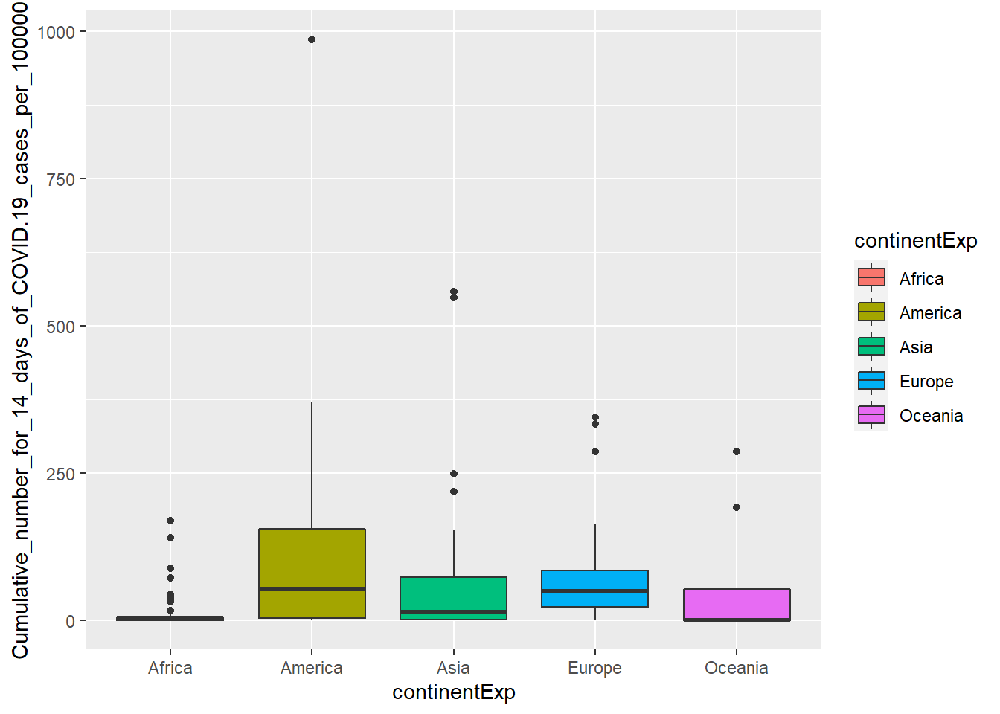
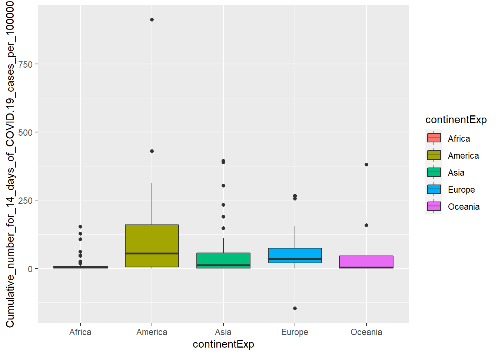

Last updated: 2020-09-16
Checks: 7 0
Knit directory: P_hacking/
This reproducible R Markdown analysis was created with workflowr (version 1.6.2). The Checks tab describes the reproducibility checks that were applied when the results were created. The Past versions tab lists the development history.
Great! Since the R Markdown file has been committed to the Git repository, you know the exact version of the code that produced these results.
Great job! The global environment was empty. Objects defined in the global environment can affect the analysis in your R Markdown file in unknown ways. For reproduciblity it’s best to always run the code in an empty environment.
The command set.seed(20200916) was run prior to running the code in the R Markdown file. Setting a seed ensures that any results that rely on randomness, e.g. subsampling or permutations, are reproducible.
Great job! Recording the operating system, R version, and package versions is critical for reproducibility.
Nice! There were no cached chunks for this analysis, so you can be confident that you successfully produced the results during this run.
Great job! Using relative paths to the files within your workflowr project makes it easier to run your code on other machines.
Great! You are using Git for version control. Tracking code development and connecting the code version to the results is critical for reproducibility.
The results in this page were generated with repository version a5535ee. See the Past versions tab to see a history of the changes made to the R Markdown and HTML files.
Note that you need to be careful to ensure that all relevant files for the analysis have been committed to Git prior to generating the results (you can use wflow_publish or wflow_git_commit). workflowr only checks the R Markdown file, but you know if there are other scripts or data files that it depends on. Below is the status of the Git repository when the results were generated:
Ignored files:
Ignored: .Rhistory
Ignored: .Rproj.user/
Note that any generated files, e.g. HTML, png, CSS, etc., are not included in this status report because it is ok for generated content to have uncommitted changes.
These are the previous versions of the repository in which changes were made to the R Markdown (analysis/P-hacking_COVID-19_c.elegans.Rmd) and HTML (docs/P-hacking_COVID-19_c.elegans.html) files. If you’ve configured a remote Git repository (see ?wflow_git_remote), click on the hyperlinks in the table below to view the files as they were in that past version.
| File | Version | Author | Date | Message |
|---|---|---|---|---|
| html | a5535ee | KiseokUchicago | 2020-09-16 | Build site. |
| Rmd | 955fa1a | KiseokUchicago | 2020-09-16 | push |
| Rmd | 8c2f84a | KiseokUchicago | 2020-09-16 | wflow_git_commit(files = "analysis/*Rmd", message = NULL, all = FALSE, |
library(tidyverse)
library(utils)
# Read the data
covid <- read.csv("https://opendata.ecdc.europa.eu/covid19/casedistribution/csv", na.strings = "", fileEncoding = "UTF-8-BOM")head(covid) dateRep day month year cases deaths countriesAndTerritories geoId
1 16/09/2020 16 9 2020 40 10 Afghanistan AF
2 15/09/2020 15 9 2020 99 6 Afghanistan AF
3 14/09/2020 14 9 2020 75 0 Afghanistan AF
4 13/09/2020 13 9 2020 35 0 Afghanistan AF
5 12/09/2020 12 9 2020 34 0 Afghanistan AF
6 11/09/2020 11 9 2020 28 0 Afghanistan AF
countryterritoryCode popData2019 continentExp
1 AFG 38041757 Asia
2 AFG 38041757 Asia
3 AFG 38041757 Asia
4 AFG 38041757 Asia
5 AFG 38041757 Asia
6 AFG 38041757 Asia
Cumulative_number_for_14_days_of_COVID.19_cases_per_100000
1 1.708649
2 1.627159
3 1.456294
4 1.309088
5 1.224970
6 1.164510colnames(covid) [1] "dateRep"
[2] "day"
[3] "month"
[4] "year"
[5] "cases"
[6] "deaths"
[7] "countriesAndTerritories"
[8] "geoId"
[9] "countryterritoryCode"
[10] "popData2019"
[11] "continentExp"
[12] "Cumulative_number_for_14_days_of_COVID.19_cases_per_100000"str(covid)'data.frame': 43091 obs. of 12 variables:
$ dateRep : chr "16/09/2020" "15/09/2020" "14/09/2020" "13/09/2020" ...
$ day : int 16 15 14 13 12 11 10 9 8 7 ...
$ month : int 9 9 9 9 9 9 9 9 9 9 ...
$ year : int 2020 2020 2020 2020 2020 2020 2020 2020 2020 2020 ...
$ cases : int 40 99 75 35 34 28 24 26 96 74 ...
$ deaths : int 10 6 0 0 0 0 2 3 3 2 ...
$ countriesAndTerritories : chr "Afghanistan" "Afghanistan" "Afghanistan" "Afghanistan" ...
$ geoId : chr "AF" "AF" "AF" "AF" ...
$ countryterritoryCode : chr "AFG" "AFG" "AFG" "AFG" ...
$ popData2019 : int 38041757 38041757 38041757 38041757 38041757 38041757 38041757 38041757 38041757 38041757 ...
$ continentExp : chr "Asia" "Asia" "Asia" "Asia" ...
$ Cumulative_number_for_14_days_of_COVID.19_cases_per_100000: num 1.71 1.63 1.46 1.31 1.22 ...summary(covid) dateRep day month year
Length:43091 Min. : 1.00 Min. : 1.00 Min. :2019
Class :character 1st Qu.: 8.00 1st Qu.: 4.00 1st Qu.:2020
Mode :character Median :15.00 Median : 6.00 Median :2020
Mean :15.61 Mean : 5.57 Mean :2020
3rd Qu.:23.00 3rd Qu.: 7.00 3rd Qu.:2020
Max. :31.00 Max. :12.00 Max. :2020
cases deaths countriesAndTerritories
Min. :-8261.0 Min. :-1918.00 Length:43091
1st Qu.: 0.0 1st Qu.: 0.00 Class :character
Median : 9.0 Median : 0.00 Mode :character
Mean : 687.2 Mean : 21.72
3rd Qu.: 146.0 3rd Qu.: 3.00
Max. :97570.0 Max. : 4928.00
geoId countryterritoryCode popData2019 continentExp
Length:43091 Length:43091 Min. :8.150e+02 Length:43091
Class :character Class :character 1st Qu.:1.356e+06 Class :character
Mode :character Mode :character Median :8.519e+06 Mode :character
Mean :4.296e+07
3rd Qu.:2.916e+07
Max. :1.434e+09
NA's :64
Cumulative_number_for_14_days_of_COVID.19_cases_per_100000
Min. :-147.4196
1st Qu.: 0.3577
Median : 4.4838
Mean : 32.5238
3rd Qu.: 26.0517
Max. :1058.2259
NA's :2781 Let’s use the continent categorical data to see if it has significant impact on the covid-19 cases (for the 14 day period)
#library(qvalue)
data <- covid
unique(data$dateRep) [1] "16/09/2020" "15/09/2020" "14/09/2020" "13/09/2020" "12/09/2020"
[6] "11/09/2020" "10/09/2020" "09/09/2020" "08/09/2020" "07/09/2020"
[11] "06/09/2020" "05/09/2020" "04/09/2020" "03/09/2020" "02/09/2020"
[16] "01/09/2020" "31/08/2020" "30/08/2020" "29/08/2020" "28/08/2020"
[21] "27/08/2020" "26/08/2020" "25/08/2020" "24/08/2020" "23/08/2020"
[26] "22/08/2020" "21/08/2020" "20/08/2020" "19/08/2020" "18/08/2020"
[31] "17/08/2020" "16/08/2020" "15/08/2020" "14/08/2020" "13/08/2020"
[36] "12/08/2020" "11/08/2020" "10/08/2020" "09/08/2020" "08/08/2020"
[41] "07/08/2020" "06/08/2020" "05/08/2020" "04/08/2020" "03/08/2020"
[46] "02/08/2020" "01/08/2020" "31/07/2020" "30/07/2020" "29/07/2020"
[51] "28/07/2020" "27/07/2020" "26/07/2020" "25/07/2020" "24/07/2020"
[56] "23/07/2020" "22/07/2020" "21/07/2020" "20/07/2020" "19/07/2020"
[61] "18/07/2020" "17/07/2020" "16/07/2020" "15/07/2020" "14/07/2020"
[66] "13/07/2020" "12/07/2020" "11/07/2020" "10/07/2020" "09/07/2020"
[71] "08/07/2020" "07/07/2020" "06/07/2020" "05/07/2020" "04/07/2020"
[76] "03/07/2020" "02/07/2020" "01/07/2020" "30/06/2020" "29/06/2020"
[81] "28/06/2020" "27/06/2020" "26/06/2020" "25/06/2020" "24/06/2020"
[86] "23/06/2020" "22/06/2020" "21/06/2020" "20/06/2020" "19/06/2020"
[91] "18/06/2020" "17/06/2020" "16/06/2020" "15/06/2020" "14/06/2020"
[96] "13/06/2020" "12/06/2020" "11/06/2020" "10/06/2020" "09/06/2020"
[101] "08/06/2020" "07/06/2020" "06/06/2020" "05/06/2020" "04/06/2020"
[106] "03/06/2020" "02/06/2020" "01/06/2020" "31/05/2020" "30/05/2020"
[111] "29/05/2020" "28/05/2020" "27/05/2020" "26/05/2020" "25/05/2020"
[116] "24/05/2020" "23/05/2020" "22/05/2020" "21/05/2020" "20/05/2020"
[121] "19/05/2020" "18/05/2020" "17/05/2020" "16/05/2020" "15/05/2020"
[126] "14/05/2020" "13/05/2020" "12/05/2020" "11/05/2020" "10/05/2020"
[131] "09/05/2020" "08/05/2020" "07/05/2020" "06/05/2020" "05/05/2020"
[136] "04/05/2020" "03/05/2020" "02/05/2020" "01/05/2020" "30/04/2020"
[141] "29/04/2020" "28/04/2020" "27/04/2020" "26/04/2020" "25/04/2020"
[146] "24/04/2020" "23/04/2020" "22/04/2020" "21/04/2020" "20/04/2020"
[151] "19/04/2020" "18/04/2020" "17/04/2020" "16/04/2020" "15/04/2020"
[156] "14/04/2020" "13/04/2020" "12/04/2020" "11/04/2020" "10/04/2020"
[161] "09/04/2020" "08/04/2020" "07/04/2020" "06/04/2020" "05/04/2020"
[166] "04/04/2020" "03/04/2020" "02/04/2020" "01/04/2020" "31/03/2020"
[171] "30/03/2020" "29/03/2020" "28/03/2020" "27/03/2020" "26/03/2020"
[176] "25/03/2020" "24/03/2020" "23/03/2020" "22/03/2020" "21/03/2020"
[181] "20/03/2020" "19/03/2020" "18/03/2020" "17/03/2020" "16/03/2020"
[186] "15/03/2020" "11/03/2020" "08/03/2020" "02/03/2020" "01/03/2020"
[191] "29/02/2020" "28/02/2020" "27/02/2020" "26/02/2020" "25/02/2020"
[196] "24/02/2020" "23/02/2020" "22/02/2020" "21/02/2020" "20/02/2020"
[201] "19/02/2020" "18/02/2020" "17/02/2020" "16/02/2020" "15/02/2020"
[206] "14/02/2020" "13/02/2020" "12/02/2020" "11/02/2020" "10/02/2020"
[211] "09/02/2020" "08/02/2020" "07/02/2020" "06/02/2020" "05/02/2020"
[216] "04/02/2020" "03/02/2020" "02/02/2020" "01/02/2020" "31/01/2020"
[221] "30/01/2020" "29/01/2020" "28/01/2020" "27/01/2020" "26/01/2020"
[226] "25/01/2020" "24/01/2020" "23/01/2020" "22/01/2020" "21/01/2020"
[231] "20/01/2020" "19/01/2020" "18/01/2020" "17/01/2020" "16/01/2020"
[236] "15/01/2020" "14/01/2020" "13/01/2020" "12/01/2020" "11/01/2020"
[241] "10/01/2020" "09/01/2020" "08/01/2020" "07/01/2020" "06/01/2020"
[246] "05/01/2020" "04/01/2020" "03/01/2020" "02/01/2020" "01/01/2020"
[251] "31/12/2019" "14/03/2020" "13/03/2020" "12/03/2020" "10/03/2020"
[256] "09/03/2020" "06/03/2020" "05/03/2020" "04/03/2020" "03/03/2020"
[261] "07/03/2020"dates<-unique(data$dateRep) #261 days
length(dates)[1] 261# make a loop through all the dates
pvals_df <- data.frame(dateRep=character(),
pval=double(),
pval.adjust=double(),
stringsAsFactors=FALSE)
counter <- 0
for(i in 1:length(dates)){
date<-dates[i]
print(date)
data_t <- data[data$dateRep==date,]
model_t <-lm(Cumulative_number_for_14_days_of_COVID.19_cases_per_100000 ~ continentExp,data=data_t)
pval <- summary(model_t)$coefficients[-1,4]['continentExpAmerica']
pval.adjust <- p.adjust(pval, method='fdr', n=length(dates))
pvals_df <- rbind(pvals_df, c(date,pval,pval.adjust))
counter <- counter +1
}[1] "16/09/2020"
[1] "15/09/2020"
[1] "14/09/2020"
[1] "13/09/2020"
[1] "12/09/2020"
[1] "11/09/2020"
[1] "10/09/2020"
[1] "09/09/2020"
[1] "08/09/2020"
[1] "07/09/2020"
[1] "06/09/2020"
[1] "05/09/2020"
[1] "04/09/2020"
[1] "03/09/2020"
[1] "02/09/2020"
[1] "01/09/2020"
[1] "31/08/2020"
[1] "30/08/2020"
[1] "29/08/2020"
[1] "28/08/2020"
[1] "27/08/2020"
[1] "26/08/2020"
[1] "25/08/2020"
[1] "24/08/2020"
[1] "23/08/2020"
[1] "22/08/2020"
[1] "21/08/2020"
[1] "20/08/2020"
[1] "19/08/2020"
[1] "18/08/2020"
[1] "17/08/2020"
[1] "16/08/2020"
[1] "15/08/2020"
[1] "14/08/2020"
[1] "13/08/2020"
[1] "12/08/2020"
[1] "11/08/2020"
[1] "10/08/2020"
[1] "09/08/2020"
[1] "08/08/2020"
[1] "07/08/2020"
[1] "06/08/2020"
[1] "05/08/2020"
[1] "04/08/2020"
[1] "03/08/2020"
[1] "02/08/2020"
[1] "01/08/2020"
[1] "31/07/2020"
[1] "30/07/2020"
[1] "29/07/2020"
[1] "28/07/2020"
[1] "27/07/2020"
[1] "26/07/2020"
[1] "25/07/2020"
[1] "24/07/2020"
[1] "23/07/2020"
[1] "22/07/2020"
[1] "21/07/2020"
[1] "20/07/2020"
[1] "19/07/2020"
[1] "18/07/2020"
[1] "17/07/2020"
[1] "16/07/2020"
[1] "15/07/2020"
[1] "14/07/2020"
[1] "13/07/2020"
[1] "12/07/2020"
[1] "11/07/2020"
[1] "10/07/2020"
[1] "09/07/2020"
[1] "08/07/2020"
[1] "07/07/2020"
[1] "06/07/2020"
[1] "05/07/2020"
[1] "04/07/2020"
[1] "03/07/2020"
[1] "02/07/2020"
[1] "01/07/2020"
[1] "30/06/2020"
[1] "29/06/2020"
[1] "28/06/2020"
[1] "27/06/2020"
[1] "26/06/2020"
[1] "25/06/2020"
[1] "24/06/2020"
[1] "23/06/2020"
[1] "22/06/2020"
[1] "21/06/2020"
[1] "20/06/2020"
[1] "19/06/2020"
[1] "18/06/2020"
[1] "17/06/2020"
[1] "16/06/2020"
[1] "15/06/2020"
[1] "14/06/2020"
[1] "13/06/2020"
[1] "12/06/2020"
[1] "11/06/2020"
[1] "10/06/2020"
[1] "09/06/2020"
[1] "08/06/2020"
[1] "07/06/2020"
[1] "06/06/2020"
[1] "05/06/2020"
[1] "04/06/2020"
[1] "03/06/2020"
[1] "02/06/2020"
[1] "01/06/2020"
[1] "31/05/2020"
[1] "30/05/2020"
[1] "29/05/2020"
[1] "28/05/2020"
[1] "27/05/2020"
[1] "26/05/2020"
[1] "25/05/2020"
[1] "24/05/2020"
[1] "23/05/2020"
[1] "22/05/2020"
[1] "21/05/2020"
[1] "20/05/2020"
[1] "19/05/2020"
[1] "18/05/2020"
[1] "17/05/2020"
[1] "16/05/2020"
[1] "15/05/2020"
[1] "14/05/2020"
[1] "13/05/2020"
[1] "12/05/2020"
[1] "11/05/2020"
[1] "10/05/2020"
[1] "09/05/2020"
[1] "08/05/2020"
[1] "07/05/2020"
[1] "06/05/2020"
[1] "05/05/2020"
[1] "04/05/2020"
[1] "03/05/2020"
[1] "02/05/2020"
[1] "01/05/2020"
[1] "30/04/2020"
[1] "29/04/2020"
[1] "28/04/2020"
[1] "27/04/2020"
[1] "26/04/2020"
[1] "25/04/2020"
[1] "24/04/2020"
[1] "23/04/2020"
[1] "22/04/2020"
[1] "21/04/2020"
[1] "20/04/2020"
[1] "19/04/2020"
[1] "18/04/2020"
[1] "17/04/2020"
[1] "16/04/2020"
[1] "15/04/2020"
[1] "14/04/2020"
[1] "13/04/2020"
[1] "12/04/2020"
[1] "11/04/2020"
[1] "10/04/2020"
[1] "09/04/2020"
[1] "08/04/2020"
[1] "07/04/2020"
[1] "06/04/2020"
[1] "05/04/2020"
[1] "04/04/2020"
[1] "03/04/2020"
[1] "02/04/2020"
[1] "01/04/2020"
[1] "31/03/2020"
[1] "30/03/2020"
[1] "29/03/2020"
[1] "28/03/2020"
[1] "27/03/2020"
[1] "26/03/2020"
[1] "25/03/2020"
[1] "24/03/2020"
[1] "23/03/2020"
[1] "22/03/2020"
[1] "21/03/2020"
[1] "20/03/2020"
[1] "19/03/2020"
[1] "18/03/2020"
[1] "17/03/2020"
[1] "16/03/2020"
[1] "15/03/2020"
[1] "11/03/2020"
[1] "08/03/2020"
[1] "02/03/2020"
[1] "01/03/2020"
[1] "29/02/2020"
[1] "28/02/2020"
[1] "27/02/2020"
[1] "26/02/2020"
[1] "25/02/2020"
[1] "24/02/2020"
[1] "23/02/2020"
[1] "22/02/2020"
[1] "21/02/2020"
[1] "20/02/2020"
[1] "19/02/2020"
[1] "18/02/2020"
[1] "17/02/2020"
[1] "16/02/2020"
[1] "15/02/2020"
[1] "14/02/2020"
[1] "13/02/2020"
[1] "12/02/2020"
[1] "11/02/2020"
[1] "10/02/2020"
[1] "09/02/2020"
[1] "08/02/2020"
[1] "07/02/2020"
[1] "06/02/2020"
[1] "05/02/2020"
[1] "04/02/2020"
[1] "03/02/2020"
[1] "02/02/2020"
[1] "01/02/2020"
[1] "31/01/2020"
[1] "30/01/2020"
[1] "29/01/2020"
[1] "28/01/2020"
[1] "27/01/2020"
[1] "26/01/2020"
[1] "25/01/2020"
[1] "24/01/2020"
[1] "23/01/2020"
[1] "22/01/2020"
[1] "21/01/2020"
[1] "20/01/2020"
[1] "19/01/2020"
[1] "18/01/2020"
[1] "17/01/2020"
[1] "16/01/2020"
[1] "15/01/2020"
[1] "14/01/2020"
[1] "13/01/2020"
[1] "12/01/2020"Error in `contrasts<-`(`*tmp*`, value = contr.funs[1 + isOF[nn]]): contrasts can be applied only to factors with 2 or more levelscolnames(pvals_df) <- c('dateRep','pval','qval')
head(pvals_df) dateRep pval qval
1 16/09/2020 3.0899766397056e-05 0.00806483902963163
2 15/09/2020 2.9859214646183e-05 0.00779325502265375
3 14/09/2020 1.53890151102835e-05 0.00401653294378399
4 13/09/2020 1.10359666749147e-05 0.00288038730215274
5 12/09/2020 6.01776158854885e-06 0.00157063577461125
6 11/09/2020 3.27294255201334e-06 0.000854238006075483Show significant dates when continent correlates with number of covid19 cases.
# significant dates with p-value (un-adjusted)
pvals_df %>% filter(pval < 0.05) dateRep pval qval
1 31/07/2020 0.000178265858791312 0.0465273891445323
2 30/07/2020 0.000243948186232371 0.0636704766066489
3 29/07/2020 0.000269654069514495 0.0703797121432833
4 28/07/2020 0.000388148968454475 0.101306880766618
5 27/07/2020 0.000627074129077444 0.163666347689213
6 26/07/2020 0.000919094163555509 0.239883576687988
7 25/07/2020 0.00133580073180488 0.348643991001072
8 24/07/2020 0.00109445479387408 0.285652701201136
9 23/07/2020 0.00149214925206693 0.389450954789469
10 22/07/2020 0.00166780784253113 0.435297846900626
11 21/07/2020 0.00214219521132791 0.559112950156585
12 20/07/2020 0.0028187437968791 0.735692130985446
13 19/07/2020 0.00344774084563656 0.899860360711143
14 18/07/2020 0.00416969871801584 1
15 17/07/2020 0.00448851083224892 1
16 16/07/2020 0.00724647577584971 1
17 15/07/2020 0.00875229250666618 1
18 14/07/2020 0.0119177456727318 1
19 13/07/2020 0.0091543301979838 1
20 12/07/2020 0.00811192391062891 1
21 11/07/2020 0.0100470781459787 1
22 10/07/2020 0.0154226717145507 1
23 09/07/2020 0.0165921183640824 1
24 08/07/2020 0.0155421326387927 1
25 07/07/2020 0.0175531005297034 1
26 06/07/2020 0.0205272405565404 1
27 05/07/2020 0.0220087357920169 1
28 04/07/2020 0.0229640181320497 1
29 03/07/2020 0.023743159056085 1
30 02/07/2020 0.0208940379997353 1
31 01/07/2020 0.0168052476859623 1
32 30/06/2020 0.016038387665322 1
33 29/06/2020 0.023117595739925 1
34 28/06/2020 0.0298562102257707 1
35 27/06/2020 0.032086790408126 1
36 26/06/2020 0.0344442102502083 1
37 25/06/2020 0.0355513645903344 1# significant dates with q-value (fdr correction)
pvals_df %>% filter(qval < 0.05) dateRep pval qval
1 16/09/2020 3.0899766397056e-05 0.00806483902963163
2 15/09/2020 2.9859214646183e-05 0.00779325502265375
3 14/09/2020 1.53890151102835e-05 0.00401653294378399
4 13/09/2020 1.10359666749147e-05 0.00288038730215274
5 12/09/2020 6.01776158854885e-06 0.00157063577461125
6 11/09/2020 3.27294255201334e-06 0.000854238006075483
7 10/09/2020 2.22507795734864e-06 0.000580745346867994
8 09/09/2020 1.94890939403431e-06 0.000508665351842954
9 08/09/2020 1.77743240069275e-06 0.000463909856580809
10 07/09/2020 1.42000674104733e-06 0.000370621759413352
11 06/09/2020 5.8634105592419e-07 0.000153035015596214
12 05/09/2020 6.60301048657589e-07 0.000172338573699631
13 04/09/2020 4.29086929522263e-07 0.000111991688605311
14 03/09/2020 4.06599385025982e-07 0.000106122439491781
15 02/09/2020 4.18755400299519e-07 0.000109295159478175
16 11/08/2020 5.74090369377635e-07 0.000149837586407563
17 10/08/2020 6.22111683370403e-07 0.000162371149359675
18 09/08/2020 7.07931141456878e-07 0.000184770027920245
19 08/08/2020 1.35170668213484e-06 0.000352795444037194
20 07/08/2020 4.82672306640706e-06 0.00125977472033224
21 06/08/2020 1.47502557399801e-05 0.0038498167481348
22 05/08/2020 2.94691380556415e-05 0.00769144503252243
23 04/08/2020 4.26769572129893e-05 0.0111386858325902
24 03/08/2020 5.80390186430484e-05 0.0151481838658356
25 02/08/2020 8.67978281932163e-05 0.0226542331584295
26 01/08/2020 6.30270822300533e-05 0.0164500684620439
27 31/07/2020 0.000178265858791312 0.0465273891445323# show specific date (significant q-value): 16/09/2020
library(ggplot2)
data1 <- data[data$dateRep=='16/09/2020',]
data1$continentExp [1] "Asia" "Europe" "Africa" "Europe" "Africa" "America" "America"
[8] "America" "Europe" "America" "Oceania" "Europe" "Europe" "America"
[15] "Asia" "Asia" "America" "Europe" "Europe" "America" "Africa"
[22] "America" "Asia" "America" "America" "Europe" "Africa" "America"
[29] "America" "Asia" "Europe" "Africa" "Africa" "Asia" "Africa"
[36] "America" "Africa" "America" "Africa" "Africa" "America" "Asia"
[43] "America" "Africa" "Africa" "America" "Africa" "Europe" "America"
[50] "America" "Europe" "Europe" "Africa" "Europe" "Africa" "America"
[57] "America" "America" "Africa" "America" "Africa" "Africa" "Europe"
[64] "Africa" "Africa" "America" "Europe" "Oceania" "Europe" "Europe"
[71] "Oceania" "Africa" "Africa" "Europe" "Europe" "Africa" "Europe"
[78] "Europe" "America" "America" "Oceania" "America" "Europe" "Africa"
[85] "Africa" "America" "America" "Europe" "America" "Europe" "Europe"
[92] "Asia" "Asia" "Asia" "Asia" "Europe" "Europe" "Asia"
[99] "Europe" "America" "Asia" "Europe" "Asia" "Asia" "Africa"
[106] "Europe" "Asia" "Asia" "Asia" "Europe" "Asia" "Africa"
[113] "Africa" "Africa" "Europe" "Europe" "Europe" "Africa" "Africa"
[120] "Asia" "Asia" "Africa" "Europe" "Africa" "Africa" "America"
[127] "Europe" "Europe" "Asia" "Europe" "America" "Africa" "Africa"
[134] "Asia" "Africa" "Asia" "Europe" "Oceania" "Oceania" "America"
[141] "Africa" "Africa" "Europe" "Oceania" "Europe" "Asia" "Asia"
[148] "Asia" "America" "Oceania" "America" "America" "Asia" "Europe"
[155] "Europe" "America" "Asia" "Europe" "Europe" "Africa" "America"
[162] "America" "America" "Europe" "Africa" "Asia" "Africa" "Europe"
[169] "Africa" "Africa" "Asia" "America" "Europe" "Europe" "Africa"
[176] "Africa" "Asia" "Africa" "Asia" "Africa" "America" "Europe"
[183] "Europe" "Asia" "Asia" "Asia" "Asia" "Asia" "Africa"
[190] "America" "Africa" "Asia" "America" "Africa" "Europe" "Asia"
[197] "Europe" "Africa" "America" "America" "America" "Asia" "America"
[204] "Asia" "Africa" "Asia" "Africa" "Africa" ggplot(data1, aes_string(x='continentExp',y='Cumulative_number_for_14_days_of_COVID.19_cases_per_100000')) + geom_boxplot(aes(fill=continentExp)) America looks significant in the boxplot. In this case the relationship could be causal, because America continent had times of peaking outbreaks.
#library(qvalue)
data <- covid
unique(data$dateRep) [1] "16/09/2020" "15/09/2020" "14/09/2020" "13/09/2020" "12/09/2020"
[6] "11/09/2020" "10/09/2020" "09/09/2020" "08/09/2020" "07/09/2020"
[11] "06/09/2020" "05/09/2020" "04/09/2020" "03/09/2020" "02/09/2020"
[16] "01/09/2020" "31/08/2020" "30/08/2020" "29/08/2020" "28/08/2020"
[21] "27/08/2020" "26/08/2020" "25/08/2020" "24/08/2020" "23/08/2020"
[26] "22/08/2020" "21/08/2020" "20/08/2020" "19/08/2020" "18/08/2020"
[31] "17/08/2020" "16/08/2020" "15/08/2020" "14/08/2020" "13/08/2020"
[36] "12/08/2020" "11/08/2020" "10/08/2020" "09/08/2020" "08/08/2020"
[41] "07/08/2020" "06/08/2020" "05/08/2020" "04/08/2020" "03/08/2020"
[46] "02/08/2020" "01/08/2020" "31/07/2020" "30/07/2020" "29/07/2020"
[51] "28/07/2020" "27/07/2020" "26/07/2020" "25/07/2020" "24/07/2020"
[56] "23/07/2020" "22/07/2020" "21/07/2020" "20/07/2020" "19/07/2020"
[61] "18/07/2020" "17/07/2020" "16/07/2020" "15/07/2020" "14/07/2020"
[66] "13/07/2020" "12/07/2020" "11/07/2020" "10/07/2020" "09/07/2020"
[71] "08/07/2020" "07/07/2020" "06/07/2020" "05/07/2020" "04/07/2020"
[76] "03/07/2020" "02/07/2020" "01/07/2020" "30/06/2020" "29/06/2020"
[81] "28/06/2020" "27/06/2020" "26/06/2020" "25/06/2020" "24/06/2020"
[86] "23/06/2020" "22/06/2020" "21/06/2020" "20/06/2020" "19/06/2020"
[91] "18/06/2020" "17/06/2020" "16/06/2020" "15/06/2020" "14/06/2020"
[96] "13/06/2020" "12/06/2020" "11/06/2020" "10/06/2020" "09/06/2020"
[101] "08/06/2020" "07/06/2020" "06/06/2020" "05/06/2020" "04/06/2020"
[106] "03/06/2020" "02/06/2020" "01/06/2020" "31/05/2020" "30/05/2020"
[111] "29/05/2020" "28/05/2020" "27/05/2020" "26/05/2020" "25/05/2020"
[116] "24/05/2020" "23/05/2020" "22/05/2020" "21/05/2020" "20/05/2020"
[121] "19/05/2020" "18/05/2020" "17/05/2020" "16/05/2020" "15/05/2020"
[126] "14/05/2020" "13/05/2020" "12/05/2020" "11/05/2020" "10/05/2020"
[131] "09/05/2020" "08/05/2020" "07/05/2020" "06/05/2020" "05/05/2020"
[136] "04/05/2020" "03/05/2020" "02/05/2020" "01/05/2020" "30/04/2020"
[141] "29/04/2020" "28/04/2020" "27/04/2020" "26/04/2020" "25/04/2020"
[146] "24/04/2020" "23/04/2020" "22/04/2020" "21/04/2020" "20/04/2020"
[151] "19/04/2020" "18/04/2020" "17/04/2020" "16/04/2020" "15/04/2020"
[156] "14/04/2020" "13/04/2020" "12/04/2020" "11/04/2020" "10/04/2020"
[161] "09/04/2020" "08/04/2020" "07/04/2020" "06/04/2020" "05/04/2020"
[166] "04/04/2020" "03/04/2020" "02/04/2020" "01/04/2020" "31/03/2020"
[171] "30/03/2020" "29/03/2020" "28/03/2020" "27/03/2020" "26/03/2020"
[176] "25/03/2020" "24/03/2020" "23/03/2020" "22/03/2020" "21/03/2020"
[181] "20/03/2020" "19/03/2020" "18/03/2020" "17/03/2020" "16/03/2020"
[186] "15/03/2020" "11/03/2020" "08/03/2020" "02/03/2020" "01/03/2020"
[191] "29/02/2020" "28/02/2020" "27/02/2020" "26/02/2020" "25/02/2020"
[196] "24/02/2020" "23/02/2020" "22/02/2020" "21/02/2020" "20/02/2020"
[201] "19/02/2020" "18/02/2020" "17/02/2020" "16/02/2020" "15/02/2020"
[206] "14/02/2020" "13/02/2020" "12/02/2020" "11/02/2020" "10/02/2020"
[211] "09/02/2020" "08/02/2020" "07/02/2020" "06/02/2020" "05/02/2020"
[216] "04/02/2020" "03/02/2020" "02/02/2020" "01/02/2020" "31/01/2020"
[221] "30/01/2020" "29/01/2020" "28/01/2020" "27/01/2020" "26/01/2020"
[226] "25/01/2020" "24/01/2020" "23/01/2020" "22/01/2020" "21/01/2020"
[231] "20/01/2020" "19/01/2020" "18/01/2020" "17/01/2020" "16/01/2020"
[236] "15/01/2020" "14/01/2020" "13/01/2020" "12/01/2020" "11/01/2020"
[241] "10/01/2020" "09/01/2020" "08/01/2020" "07/01/2020" "06/01/2020"
[246] "05/01/2020" "04/01/2020" "03/01/2020" "02/01/2020" "01/01/2020"
[251] "31/12/2019" "14/03/2020" "13/03/2020" "12/03/2020" "10/03/2020"
[256] "09/03/2020" "06/03/2020" "05/03/2020" "04/03/2020" "03/03/2020"
[261] "07/03/2020"dates<-unique(data$dateRep) #261 days
length(dates)[1] 261# make a loop through all the dates
pvals_df <- data.frame(dateRep=character(),
pval=double(),
pval.adjust=double(),
stringsAsFactors=FALSE)
counter <- 0
for(i in 1:length(dates)){
date<-dates[i]
print(date)
data_t <- data[data$dateRep==date,]
model_t <-lm(Cumulative_number_for_14_days_of_COVID.19_cases_per_100000 ~ continentExp,data=data_t)
pval <- summary(model_t)$coefficients[-1,4]['continentExpAsia']
pval.adjust <- p.adjust(pval, method='fdr', n=length(dates))
pvals_df <- rbind(pvals_df, c(date,pval,pval.adjust))
counter <- counter +1
}[1] "16/09/2020"
[1] "15/09/2020"
[1] "14/09/2020"
[1] "13/09/2020"
[1] "12/09/2020"
[1] "11/09/2020"
[1] "10/09/2020"
[1] "09/09/2020"
[1] "08/09/2020"
[1] "07/09/2020"
[1] "06/09/2020"
[1] "05/09/2020"
[1] "04/09/2020"
[1] "03/09/2020"
[1] "02/09/2020"
[1] "01/09/2020"
[1] "31/08/2020"
[1] "30/08/2020"
[1] "29/08/2020"
[1] "28/08/2020"
[1] "27/08/2020"
[1] "26/08/2020"
[1] "25/08/2020"
[1] "24/08/2020"
[1] "23/08/2020"
[1] "22/08/2020"
[1] "21/08/2020"
[1] "20/08/2020"
[1] "19/08/2020"
[1] "18/08/2020"
[1] "17/08/2020"
[1] "16/08/2020"
[1] "15/08/2020"
[1] "14/08/2020"
[1] "13/08/2020"
[1] "12/08/2020"
[1] "11/08/2020"
[1] "10/08/2020"
[1] "09/08/2020"
[1] "08/08/2020"
[1] "07/08/2020"
[1] "06/08/2020"
[1] "05/08/2020"
[1] "04/08/2020"
[1] "03/08/2020"
[1] "02/08/2020"
[1] "01/08/2020"
[1] "31/07/2020"
[1] "30/07/2020"
[1] "29/07/2020"
[1] "28/07/2020"
[1] "27/07/2020"
[1] "26/07/2020"
[1] "25/07/2020"
[1] "24/07/2020"
[1] "23/07/2020"
[1] "22/07/2020"
[1] "21/07/2020"
[1] "20/07/2020"
[1] "19/07/2020"
[1] "18/07/2020"
[1] "17/07/2020"
[1] "16/07/2020"
[1] "15/07/2020"
[1] "14/07/2020"
[1] "13/07/2020"
[1] "12/07/2020"
[1] "11/07/2020"
[1] "10/07/2020"
[1] "09/07/2020"
[1] "08/07/2020"
[1] "07/07/2020"
[1] "06/07/2020"
[1] "05/07/2020"
[1] "04/07/2020"
[1] "03/07/2020"
[1] "02/07/2020"
[1] "01/07/2020"
[1] "30/06/2020"
[1] "29/06/2020"
[1] "28/06/2020"
[1] "27/06/2020"
[1] "26/06/2020"
[1] "25/06/2020"
[1] "24/06/2020"
[1] "23/06/2020"
[1] "22/06/2020"
[1] "21/06/2020"
[1] "20/06/2020"
[1] "19/06/2020"
[1] "18/06/2020"
[1] "17/06/2020"
[1] "16/06/2020"
[1] "15/06/2020"
[1] "14/06/2020"
[1] "13/06/2020"
[1] "12/06/2020"
[1] "11/06/2020"
[1] "10/06/2020"
[1] "09/06/2020"
[1] "08/06/2020"
[1] "07/06/2020"
[1] "06/06/2020"
[1] "05/06/2020"
[1] "04/06/2020"
[1] "03/06/2020"
[1] "02/06/2020"
[1] "01/06/2020"
[1] "31/05/2020"
[1] "30/05/2020"
[1] "29/05/2020"
[1] "28/05/2020"
[1] "27/05/2020"
[1] "26/05/2020"
[1] "25/05/2020"
[1] "24/05/2020"
[1] "23/05/2020"
[1] "22/05/2020"
[1] "21/05/2020"
[1] "20/05/2020"
[1] "19/05/2020"
[1] "18/05/2020"
[1] "17/05/2020"
[1] "16/05/2020"
[1] "15/05/2020"
[1] "14/05/2020"
[1] "13/05/2020"
[1] "12/05/2020"
[1] "11/05/2020"
[1] "10/05/2020"
[1] "09/05/2020"
[1] "08/05/2020"
[1] "07/05/2020"
[1] "06/05/2020"
[1] "05/05/2020"
[1] "04/05/2020"
[1] "03/05/2020"
[1] "02/05/2020"
[1] "01/05/2020"
[1] "30/04/2020"
[1] "29/04/2020"
[1] "28/04/2020"
[1] "27/04/2020"
[1] "26/04/2020"
[1] "25/04/2020"
[1] "24/04/2020"
[1] "23/04/2020"
[1] "22/04/2020"
[1] "21/04/2020"
[1] "20/04/2020"
[1] "19/04/2020"
[1] "18/04/2020"
[1] "17/04/2020"
[1] "16/04/2020"
[1] "15/04/2020"
[1] "14/04/2020"
[1] "13/04/2020"
[1] "12/04/2020"
[1] "11/04/2020"
[1] "10/04/2020"
[1] "09/04/2020"
[1] "08/04/2020"
[1] "07/04/2020"
[1] "06/04/2020"
[1] "05/04/2020"
[1] "04/04/2020"
[1] "03/04/2020"
[1] "02/04/2020"
[1] "01/04/2020"
[1] "31/03/2020"
[1] "30/03/2020"
[1] "29/03/2020"
[1] "28/03/2020"
[1] "27/03/2020"
[1] "26/03/2020"
[1] "25/03/2020"
[1] "24/03/2020"
[1] "23/03/2020"
[1] "22/03/2020"
[1] "21/03/2020"
[1] "20/03/2020"
[1] "19/03/2020"
[1] "18/03/2020"
[1] "17/03/2020"
[1] "16/03/2020"
[1] "15/03/2020"
[1] "11/03/2020"
[1] "08/03/2020"
[1] "02/03/2020"
[1] "01/03/2020"
[1] "29/02/2020"
[1] "28/02/2020"
[1] "27/02/2020"
[1] "26/02/2020"
[1] "25/02/2020"
[1] "24/02/2020"
[1] "23/02/2020"
[1] "22/02/2020"
[1] "21/02/2020"
[1] "20/02/2020"
[1] "19/02/2020"
[1] "18/02/2020"
[1] "17/02/2020"
[1] "16/02/2020"
[1] "15/02/2020"
[1] "14/02/2020"
[1] "13/02/2020"
[1] "12/02/2020"
[1] "11/02/2020"
[1] "10/02/2020"
[1] "09/02/2020"
[1] "08/02/2020"
[1] "07/02/2020"
[1] "06/02/2020"
[1] "05/02/2020"
[1] "04/02/2020"
[1] "03/02/2020"
[1] "02/02/2020"
[1] "01/02/2020"
[1] "31/01/2020"
[1] "30/01/2020"
[1] "29/01/2020"
[1] "28/01/2020"
[1] "27/01/2020"
[1] "26/01/2020"
[1] "25/01/2020"
[1] "24/01/2020"
[1] "23/01/2020"
[1] "22/01/2020"
[1] "21/01/2020"
[1] "20/01/2020"
[1] "19/01/2020"
[1] "18/01/2020"
[1] "17/01/2020"
[1] "16/01/2020"
[1] "15/01/2020"
[1] "14/01/2020"
[1] "13/01/2020"
[1] "12/01/2020"Error in `contrasts<-`(`*tmp*`, value = contr.funs[1 + isOF[nn]]): contrasts can be applied only to factors with 2 or more levelscolnames(pvals_df) <- c('dateRep','pval','qval')
head(pvals_df) dateRep pval qval
1 16/09/2020 0.0174563672978543 1
2 15/09/2020 0.0225220688008897 1
3 14/09/2020 0.0231030592809335 1
4 13/09/2020 0.0270207882418063 1
5 12/09/2020 0.0302168011097824 1
6 11/09/2020 0.0284397432241684 1Show the significant dates when continent correlates with number of covid19 cases.
# significant dates with p-value (un-adjusted)
pvals_df %>% filter(pval < 0.05) dateRep pval qval
1 16/09/2020 0.0174563672978543 1
2 15/09/2020 0.0225220688008897 1
3 14/09/2020 0.0231030592809335 1
4 13/09/2020 0.0270207882418063 1
5 12/09/2020 0.0302168011097824 1
6 11/09/2020 0.0284397432241684 1
7 10/09/2020 0.0338640770776833 1
8 09/09/2020 0.0374768289014247 1
9 08/09/2020 0.0365794284785288 1
10 07/09/2020 0.0461354587758811 1
11 13/08/2020 0.0423575811784294 1
12 12/08/2020 0.0328715059978005 1
13 11/08/2020 0.0219900484103045 1
14 10/08/2020 0.0209444956283799 1
15 09/08/2020 0.0176172484189988 1
16 08/08/2020 0.0124330704936922 1
17 07/08/2020 0.0126233202076352 1
18 06/08/2020 0.0127365503110123 1
19 05/08/2020 0.0126804909465067 1
20 04/08/2020 0.0104029524670626 1
21 03/08/2020 0.0092315079388755 1
22 02/08/2020 0.00960259217636125 1
23 01/08/2020 0.00505419025691876 1
24 31/07/2020 0.00267196836133187 0.697383742307619
25 30/07/2020 0.00282854794690754 0.738251014142869
26 29/07/2020 0.00246621412092756 0.643681885562094
27 28/07/2020 0.00272289006891392 0.710674307986533
28 27/07/2020 0.00289621730106069 0.755912715576841
29 26/07/2020 0.00272047373712363 0.710043645389267
30 25/07/2020 0.00298452160266589 0.778960138295798
31 24/07/2020 0.0018089853900384 0.472145186800022
32 23/07/2020 0.00153384637633721 0.400333904224011
33 22/07/2020 0.00153679531200754 0.401103576433969
34 21/07/2020 0.00183809171127657 0.479741936643184
35 20/07/2020 0.00217425639735185 0.567480919708832
36 19/07/2020 0.0019891490438962 0.519167900456908
37 18/07/2020 0.00185527152754231 0.484225868688542
38 17/07/2020 0.00337803360387927 0.88166677061249
39 16/07/2020 0.00396122358613444 1
40 15/07/2020 0.00391998092548008 1
41 14/07/2020 0.0028963231231979 0.755940335154653
42 13/07/2020 0.00247083444664817 0.644887790575173
43 12/07/2020 0.00246415661314754 0.643144876031507
44 11/07/2020 0.00287807369049566 0.751177233219368
45 10/07/2020 0.00293768940726664 0.766736935296593
46 09/07/2020 0.00307092166801016 0.801510555350652
47 08/07/2020 0.0027602314319928 0.720420403750121
48 07/07/2020 0.00256492087763442 0.669444349062583
49 06/07/2020 0.00240381927226687 0.627396830061653
50 05/07/2020 0.00235113886612921 0.613647244059723
51 04/07/2020 0.00266875589838039 0.696545289477281
52 03/07/2020 0.00307673817764851 0.80302866436626
53 02/07/2020 0.00247217206001788 0.645236907664666
54 01/07/2020 0.00445241030228812 1
55 30/06/2020 0.00692523615761877 1
56 29/06/2020 0.00740656272484298 1
57 28/06/2020 0.00774199432606061 1
58 27/06/2020 0.00704976487320036 1
59 26/06/2020 0.00744723947390123 1
60 25/06/2020 0.00782227241112448 1
61 24/06/2020 0.0104184135189367 1
62 23/06/2020 0.0104324552176925 1
63 22/06/2020 0.00968136481032046 1
64 21/06/2020 0.00943275050866543 1
65 20/06/2020 0.0088989308329544 1
66 19/06/2020 0.00819992185453886 1
67 18/06/2020 0.00874580992425998 1
68 17/06/2020 0.00550462504492795 1
69 16/06/2020 0.00573547830958187 1
70 15/06/2020 0.00570739698154537 1
71 14/06/2020 0.00526721781436839 1
72 13/06/2020 0.00588532136960387 1
73 12/06/2020 0.00575210654961308 1
74 11/06/2020 0.00577280464563395 1
75 10/06/2020 0.00527490382971311 1
76 09/06/2020 0.00697085381853353 1
77 08/06/2020 0.00831268610200338 1
78 07/06/2020 0.00807492898099559 1
79 06/06/2020 0.00872966980083836 1
80 05/06/2020 0.00877328396361695 1
81 04/06/2020 0.00878027368640871 1
82 03/06/2020 0.00908516289975003 1
83 02/06/2020 0.0085821987367709 1
84 01/06/2020 0.00875166246000619 1
85 31/05/2020 0.00931488086627997 1
86 30/05/2020 0.00735497689055948 1
87 29/05/2020 0.00678883575329951 1
88 28/05/2020 0.00640442752857974 1
89 27/05/2020 0.00613894979823806 1
90 26/05/2020 0.00443022167165377 1
91 25/05/2020 0.00339834229174829 0.886967338146305
92 24/05/2020 0.0033164165945503 0.865584731177628
93 23/05/2020 0.00263147392363119 0.686814694067741
94 22/05/2020 0.0025418847778323 0.663431927014229
95 21/05/2020 0.00255400577327525 0.666595506824841
96 20/05/2020 0.0025219321359704 0.658224287488274
97 19/05/2020 0.0026193530046805 0.683651134221611
98 18/05/2020 0.00368748258432658 0.962432954509237
99 17/05/2020 0.00382549188761736 0.99845338266813
100 16/05/2020 0.00429598142633167 1
101 15/05/2020 0.00540378602442901 1
102 14/05/2020 0.00735343874353492 1
103 13/05/2020 0.0113047338129873 1
104 12/05/2020 0.0138797046580056 1
105 11/05/2020 0.0153949420409907 1
106 10/05/2020 0.024897476281543 1
107 09/05/2020 0.0262303756281557 1
108 08/05/2020 0.0301421774507976 1
109 07/05/2020 0.0272722716818667 1
110 06/05/2020 0.0185864833371064 1
111 05/05/2020 0.0219162061218025 1
112 04/05/2020 0.0207806474215311 1
113 03/05/2020 0.0228830592069406 1
114 02/05/2020 0.028782233923821 1
115 01/05/2020 0.0329897426995488 1
116 30/04/2020 0.0439824924939714 1# significant dates with q-value (fdr correction)
pvals_df %>% filter(qval < 0.05)[1] dateRep pval qval
<0 행> <또는 row.names의 길이가 0입니다># show specific date (significant p value wihtout fdr correction): 30/04/2020
library(ggplot2)
data1 <- data[data$dateRep=='30/04/2020',]
data1$continentExp [1] "Asia" "Europe" "Africa" "Europe" "Africa" "America" "America"
[8] "America" "Europe" "America" "Oceania" "Europe" "Europe" "America"
[15] "Asia" "Asia" "America" "Europe" "Europe" "America" "Africa"
[22] "America" "Asia" "America" "America" "Europe" "Africa" "America"
[29] "America" "Asia" "Europe" "Africa" "Africa" "Asia" "Africa"
[36] "America" "Africa" "America" "Africa" "Africa" "America" "Asia"
[43] "America" "Africa" "America" "Africa" "Europe" "America" "America"
[50] "Europe" "Europe" "Africa" "Europe" "Africa" "America" "America"
[57] "America" "Africa" "America" "Africa" "Africa" "Europe" "Africa"
[64] "Africa" "America" "Europe" "Oceania" "Europe" "Europe" "Oceania"
[71] "Africa" "Africa" "Europe" "Europe" "Africa" "Europe" "Europe"
[78] "America" "America" "Oceania" "America" "Europe" "Africa" "Africa"
[85] "America" "America" "Europe" "America" "Europe" "Europe" "Asia"
[92] "Asia" "Asia" "Asia" "Europe" "Europe" "Asia" "Europe"
[99] "America" "Asia" "Europe" "Asia" "Asia" "Africa" "Europe"
[106] "Asia" "Asia" "Asia" "Europe" "Asia" "Africa" "Africa"
[113] "Europe" "Europe" "Europe" "Africa" "Africa" "Asia" "Asia"
[120] "Africa" "Europe" "Africa" "Africa" "America" "Europe" "Europe"
[127] "Asia" "Europe" "America" "Africa" "Africa" "Asia" "Africa"
[134] "Asia" "Europe" "Oceania" "Oceania" "America" "Africa" "Africa"
[141] "Europe" "Oceania" "Europe" "Asia" "Asia" "Asia" "America"
[148] "Oceania" "America" "America" "Asia" "Europe" "Europe" "America"
[155] "Asia" "Europe" "Europe" "Africa" "America" "America" "America"
[162] "Europe" "Africa" "Asia" "Africa" "Europe" "Africa" "Africa"
[169] "Asia" "America" "Europe" "Europe" "Africa" "Africa" "Asia"
[176] "Africa" "Europe" "Asia" "Africa" "America" "Europe" "Europe"
[183] "Asia" "Asia" "Asia" "Asia" "Africa" "America" "Africa"
[190] "Asia" "America" "Africa" "Europe" "Asia" "Europe" "Africa"
[197] "America" "America" "America" "Asia" "America" "Asia" "Africa"
[204] "Asia" "Africa" "Africa" ggplot(data1, aes_string(x='continentExp',y='Cumulative_number_for_14_days_of_COVID.19_cases_per_100000')) + geom_boxplot(aes(fill=continentExp))
In the Asia continent, continent factor had spurious significant correlations in 116 dates (without multiple testing adjustments). We know these dates are spurious because after FDR correction whether the country is in the Asia continent did not show any significant correlation to the number of covid-19 cases.
(Argue for an underlying non-statistical explanation for your group’s fake result.) In some dates, countries in Asia might have had simultaneous spikes at the same day. Since the days that have significant p-value are all after April, these dates are pretty far from when covid-19 outbroke in China.
When using the continent as an independent variable, it would be more accurate to use the p-value of the whole model (not p-value for individual coefficients) in order to test the effect of the continent. 88 dates show significant p-value, and among them 47 dates show significant q-value (FDR corrected p-value). Therefore, we could conclude that even though there are some spurious correlations found due to multiple testing, about half of these 88 dates turns out to be significant.
# extract p-value
# function to extract p-value from lm()
lmp <- function (modelobject) {
if (class(modelobject) != "lm") stop("Not an object of class 'lm' ")
f <- summary(modelobject)$fstatistic
p <- pf(f[1],f[2],f[3],lower.tail=F)
attributes(p) <- NULL
return(p)
}
#library(qvalue)
data <- covid
unique(data$dateRep) [1] "16/09/2020" "15/09/2020" "14/09/2020" "13/09/2020" "12/09/2020"
[6] "11/09/2020" "10/09/2020" "09/09/2020" "08/09/2020" "07/09/2020"
[11] "06/09/2020" "05/09/2020" "04/09/2020" "03/09/2020" "02/09/2020"
[16] "01/09/2020" "31/08/2020" "30/08/2020" "29/08/2020" "28/08/2020"
[21] "27/08/2020" "26/08/2020" "25/08/2020" "24/08/2020" "23/08/2020"
[26] "22/08/2020" "21/08/2020" "20/08/2020" "19/08/2020" "18/08/2020"
[31] "17/08/2020" "16/08/2020" "15/08/2020" "14/08/2020" "13/08/2020"
[36] "12/08/2020" "11/08/2020" "10/08/2020" "09/08/2020" "08/08/2020"
[41] "07/08/2020" "06/08/2020" "05/08/2020" "04/08/2020" "03/08/2020"
[46] "02/08/2020" "01/08/2020" "31/07/2020" "30/07/2020" "29/07/2020"
[51] "28/07/2020" "27/07/2020" "26/07/2020" "25/07/2020" "24/07/2020"
[56] "23/07/2020" "22/07/2020" "21/07/2020" "20/07/2020" "19/07/2020"
[61] "18/07/2020" "17/07/2020" "16/07/2020" "15/07/2020" "14/07/2020"
[66] "13/07/2020" "12/07/2020" "11/07/2020" "10/07/2020" "09/07/2020"
[71] "08/07/2020" "07/07/2020" "06/07/2020" "05/07/2020" "04/07/2020"
[76] "03/07/2020" "02/07/2020" "01/07/2020" "30/06/2020" "29/06/2020"
[81] "28/06/2020" "27/06/2020" "26/06/2020" "25/06/2020" "24/06/2020"
[86] "23/06/2020" "22/06/2020" "21/06/2020" "20/06/2020" "19/06/2020"
[91] "18/06/2020" "17/06/2020" "16/06/2020" "15/06/2020" "14/06/2020"
[96] "13/06/2020" "12/06/2020" "11/06/2020" "10/06/2020" "09/06/2020"
[101] "08/06/2020" "07/06/2020" "06/06/2020" "05/06/2020" "04/06/2020"
[106] "03/06/2020" "02/06/2020" "01/06/2020" "31/05/2020" "30/05/2020"
[111] "29/05/2020" "28/05/2020" "27/05/2020" "26/05/2020" "25/05/2020"
[116] "24/05/2020" "23/05/2020" "22/05/2020" "21/05/2020" "20/05/2020"
[121] "19/05/2020" "18/05/2020" "17/05/2020" "16/05/2020" "15/05/2020"
[126] "14/05/2020" "13/05/2020" "12/05/2020" "11/05/2020" "10/05/2020"
[131] "09/05/2020" "08/05/2020" "07/05/2020" "06/05/2020" "05/05/2020"
[136] "04/05/2020" "03/05/2020" "02/05/2020" "01/05/2020" "30/04/2020"
[141] "29/04/2020" "28/04/2020" "27/04/2020" "26/04/2020" "25/04/2020"
[146] "24/04/2020" "23/04/2020" "22/04/2020" "21/04/2020" "20/04/2020"
[151] "19/04/2020" "18/04/2020" "17/04/2020" "16/04/2020" "15/04/2020"
[156] "14/04/2020" "13/04/2020" "12/04/2020" "11/04/2020" "10/04/2020"
[161] "09/04/2020" "08/04/2020" "07/04/2020" "06/04/2020" "05/04/2020"
[166] "04/04/2020" "03/04/2020" "02/04/2020" "01/04/2020" "31/03/2020"
[171] "30/03/2020" "29/03/2020" "28/03/2020" "27/03/2020" "26/03/2020"
[176] "25/03/2020" "24/03/2020" "23/03/2020" "22/03/2020" "21/03/2020"
[181] "20/03/2020" "19/03/2020" "18/03/2020" "17/03/2020" "16/03/2020"
[186] "15/03/2020" "11/03/2020" "08/03/2020" "02/03/2020" "01/03/2020"
[191] "29/02/2020" "28/02/2020" "27/02/2020" "26/02/2020" "25/02/2020"
[196] "24/02/2020" "23/02/2020" "22/02/2020" "21/02/2020" "20/02/2020"
[201] "19/02/2020" "18/02/2020" "17/02/2020" "16/02/2020" "15/02/2020"
[206] "14/02/2020" "13/02/2020" "12/02/2020" "11/02/2020" "10/02/2020"
[211] "09/02/2020" "08/02/2020" "07/02/2020" "06/02/2020" "05/02/2020"
[216] "04/02/2020" "03/02/2020" "02/02/2020" "01/02/2020" "31/01/2020"
[221] "30/01/2020" "29/01/2020" "28/01/2020" "27/01/2020" "26/01/2020"
[226] "25/01/2020" "24/01/2020" "23/01/2020" "22/01/2020" "21/01/2020"
[231] "20/01/2020" "19/01/2020" "18/01/2020" "17/01/2020" "16/01/2020"
[236] "15/01/2020" "14/01/2020" "13/01/2020" "12/01/2020" "11/01/2020"
[241] "10/01/2020" "09/01/2020" "08/01/2020" "07/01/2020" "06/01/2020"
[246] "05/01/2020" "04/01/2020" "03/01/2020" "02/01/2020" "01/01/2020"
[251] "31/12/2019" "14/03/2020" "13/03/2020" "12/03/2020" "10/03/2020"
[256] "09/03/2020" "06/03/2020" "05/03/2020" "04/03/2020" "03/03/2020"
[261] "07/03/2020"dates<-unique(data$dateRep) #261 days
length(dates)[1] 261# make a loop through all the dates
pvals_df <- data.frame(dateRep=character(),
pval=double(),
pval.adjust=double(),
stringsAsFactors=FALSE)
counter <- 0
for(i in 1:length(dates)){
date<-dates[i]
print(date)
data_t <- data[data$dateRep==date,]
model_t <-lm(Cumulative_number_for_14_days_of_COVID.19_cases_per_100000 ~ continentExp,data=data_t)
pval <- lmp(model_t)
pval.adjust <- p.adjust(pval, method='fdr', n=length(dates))
pvals_df <- rbind(pvals_df, c(date,pval,pval.adjust))
counter <- counter +1
}[1] "16/09/2020"
[1] "15/09/2020"
[1] "14/09/2020"
[1] "13/09/2020"
[1] "12/09/2020"
[1] "11/09/2020"
[1] "10/09/2020"
[1] "09/09/2020"
[1] "08/09/2020"
[1] "07/09/2020"
[1] "06/09/2020"
[1] "05/09/2020"
[1] "04/09/2020"
[1] "03/09/2020"
[1] "02/09/2020"
[1] "01/09/2020"
[1] "31/08/2020"
[1] "30/08/2020"
[1] "29/08/2020"
[1] "28/08/2020"
[1] "27/08/2020"
[1] "26/08/2020"
[1] "25/08/2020"
[1] "24/08/2020"
[1] "23/08/2020"
[1] "22/08/2020"
[1] "21/08/2020"
[1] "20/08/2020"
[1] "19/08/2020"
[1] "18/08/2020"
[1] "17/08/2020"
[1] "16/08/2020"
[1] "15/08/2020"
[1] "14/08/2020"
[1] "13/08/2020"
[1] "12/08/2020"
[1] "11/08/2020"
[1] "10/08/2020"
[1] "09/08/2020"
[1] "08/08/2020"
[1] "07/08/2020"
[1] "06/08/2020"
[1] "05/08/2020"
[1] "04/08/2020"
[1] "03/08/2020"
[1] "02/08/2020"
[1] "01/08/2020"
[1] "31/07/2020"
[1] "30/07/2020"
[1] "29/07/2020"
[1] "28/07/2020"
[1] "27/07/2020"
[1] "26/07/2020"
[1] "25/07/2020"
[1] "24/07/2020"
[1] "23/07/2020"
[1] "22/07/2020"
[1] "21/07/2020"
[1] "20/07/2020"
[1] "19/07/2020"
[1] "18/07/2020"
[1] "17/07/2020"
[1] "16/07/2020"
[1] "15/07/2020"
[1] "14/07/2020"
[1] "13/07/2020"
[1] "12/07/2020"
[1] "11/07/2020"
[1] "10/07/2020"
[1] "09/07/2020"
[1] "08/07/2020"
[1] "07/07/2020"
[1] "06/07/2020"
[1] "05/07/2020"
[1] "04/07/2020"
[1] "03/07/2020"
[1] "02/07/2020"
[1] "01/07/2020"
[1] "30/06/2020"
[1] "29/06/2020"
[1] "28/06/2020"
[1] "27/06/2020"
[1] "26/06/2020"
[1] "25/06/2020"
[1] "24/06/2020"
[1] "23/06/2020"
[1] "22/06/2020"
[1] "21/06/2020"
[1] "20/06/2020"
[1] "19/06/2020"
[1] "18/06/2020"
[1] "17/06/2020"
[1] "16/06/2020"
[1] "15/06/2020"
[1] "14/06/2020"
[1] "13/06/2020"
[1] "12/06/2020"
[1] "11/06/2020"
[1] "10/06/2020"
[1] "09/06/2020"
[1] "08/06/2020"
[1] "07/06/2020"
[1] "06/06/2020"
[1] "05/06/2020"
[1] "04/06/2020"
[1] "03/06/2020"
[1] "02/06/2020"
[1] "01/06/2020"
[1] "31/05/2020"
[1] "30/05/2020"
[1] "29/05/2020"
[1] "28/05/2020"
[1] "27/05/2020"
[1] "26/05/2020"
[1] "25/05/2020"
[1] "24/05/2020"
[1] "23/05/2020"
[1] "22/05/2020"
[1] "21/05/2020"
[1] "20/05/2020"
[1] "19/05/2020"
[1] "18/05/2020"
[1] "17/05/2020"
[1] "16/05/2020"
[1] "15/05/2020"
[1] "14/05/2020"
[1] "13/05/2020"
[1] "12/05/2020"
[1] "11/05/2020"
[1] "10/05/2020"
[1] "09/05/2020"
[1] "08/05/2020"
[1] "07/05/2020"
[1] "06/05/2020"
[1] "05/05/2020"
[1] "04/05/2020"
[1] "03/05/2020"
[1] "02/05/2020"
[1] "01/05/2020"
[1] "30/04/2020"
[1] "29/04/2020"
[1] "28/04/2020"
[1] "27/04/2020"
[1] "26/04/2020"
[1] "25/04/2020"
[1] "24/04/2020"
[1] "23/04/2020"
[1] "22/04/2020"
[1] "21/04/2020"
[1] "20/04/2020"
[1] "19/04/2020"
[1] "18/04/2020"
[1] "17/04/2020"
[1] "16/04/2020"
[1] "15/04/2020"
[1] "14/04/2020"
[1] "13/04/2020"
[1] "12/04/2020"
[1] "11/04/2020"
[1] "10/04/2020"
[1] "09/04/2020"
[1] "08/04/2020"
[1] "07/04/2020"
[1] "06/04/2020"
[1] "05/04/2020"
[1] "04/04/2020"
[1] "03/04/2020"
[1] "02/04/2020"
[1] "01/04/2020"
[1] "31/03/2020"
[1] "30/03/2020"
[1] "29/03/2020"
[1] "28/03/2020"
[1] "27/03/2020"
[1] "26/03/2020"
[1] "25/03/2020"
[1] "24/03/2020"
[1] "23/03/2020"
[1] "22/03/2020"
[1] "21/03/2020"
[1] "20/03/2020"
[1] "19/03/2020"
[1] "18/03/2020"
[1] "17/03/2020"
[1] "16/03/2020"
[1] "15/03/2020"
[1] "11/03/2020"
[1] "08/03/2020"
[1] "02/03/2020"
[1] "01/03/2020"
[1] "29/02/2020"
[1] "28/02/2020"
[1] "27/02/2020"
[1] "26/02/2020"
[1] "25/02/2020"
[1] "24/02/2020"
[1] "23/02/2020"
[1] "22/02/2020"
[1] "21/02/2020"
[1] "20/02/2020"
[1] "19/02/2020"
[1] "18/02/2020"
[1] "17/02/2020"
[1] "16/02/2020"
[1] "15/02/2020"
[1] "14/02/2020"
[1] "13/02/2020"
[1] "12/02/2020"
[1] "11/02/2020"
[1] "10/02/2020"
[1] "09/02/2020"
[1] "08/02/2020"
[1] "07/02/2020"
[1] "06/02/2020"
[1] "05/02/2020"
[1] "04/02/2020"
[1] "03/02/2020"
[1] "02/02/2020"
[1] "01/02/2020"
[1] "31/01/2020"
[1] "30/01/2020"
[1] "29/01/2020"
[1] "28/01/2020"
[1] "27/01/2020"
[1] "26/01/2020"
[1] "25/01/2020"
[1] "24/01/2020"
[1] "23/01/2020"
[1] "22/01/2020"
[1] "21/01/2020"
[1] "20/01/2020"
[1] "19/01/2020"
[1] "18/01/2020"
[1] "17/01/2020"
[1] "16/01/2020"
[1] "15/01/2020"
[1] "14/01/2020"
[1] "13/01/2020"
[1] "12/01/2020"Error in `contrasts<-`(`*tmp*`, value = contr.funs[1 + isOF[nn]]): contrasts can be applied only to factors with 2 or more levelscolnames(pvals_df) <- c('dateRep','pval','qval')
head(pvals_df) dateRep pval qval
1 16/09/2020 0.00133902938159994 0.349486668597584
2 15/09/2020 0.00129826523731146 0.338847226938291
3 14/09/2020 0.00078167043208454 0.204015982774065
4 13/09/2020 0.00060083456925244 0.156817822574887
5 12/09/2020 0.000362717039328131 0.0946691472646422
6 11/09/2020 0.000212101806269819 0.0553585714364228# significant dates with p-value (un-adjusted)
pvals_df %>% filter(pval < 0.05) dateRep pval qval
1 16/09/2020 0.00133902938159994 0.349486668597584
2 15/09/2020 0.00129826523731146 0.338847226938291
3 14/09/2020 0.00078167043208454 0.204015982774065
4 13/09/2020 0.00060083456925244 0.156817822574887
5 12/09/2020 0.000362717039328131 0.0946691472646422
6 11/09/2020 0.000212101806269819 0.0553585714364228
7 10/09/2020 0.000142990235220594 0.037320451392575
8 09/09/2020 0.000119133684849556 0.0310938917457341
9 08/09/2020 0.00010417162522385 0.0271887941834249
10 06/08/2020 0.000217378943162644 0.0567359041654501
11 05/08/2020 0.000383330190402981 0.100049179695178
12 04/08/2020 0.000472154996796515 0.12323245416389
13 03/08/2020 0.000569242315843679 0.1485722444352
14 02/08/2020 0.00077994764628007 0.203566335679098
15 01/08/2020 0.000533519932379453 0.139248702351037
16 31/07/2020 0.000842189682593134 0.219811507156808
17 30/07/2020 0.00103899494288778 0.27117768009371
18 29/07/2020 0.000979437544979277 0.255633199239591
19 28/07/2020 0.0013537683668178 0.353333543739445
20 27/07/2020 0.00166285841809932 0.434006047123922
21 26/07/2020 0.00202782426085195 0.529262132082358
22 25/07/2020 0.00290145495007906 0.757279741970635
23 24/07/2020 0.00198809299805054 0.51889227249119
24 23/07/2020 0.00206541071700599 0.539072197138562
25 22/07/2020 0.00210429804872132 0.549221790716264
26 21/07/2020 0.00269918693556382 0.704487790182157
27 20/07/2020 0.00310966675284558 0.811623022492695
28 19/07/2020 0.00349735058156148 0.912808501787546
29 18/07/2020 0.00389290205677987 1
30 17/07/2020 0.00602843119996869 1
31 16/07/2020 0.00848227427682026 1
32 15/07/2020 0.00990217107718485 1
33 14/07/2020 0.00885629183525209 1
34 13/07/2020 0.00713398197452521 1
35 12/07/2020 0.00702619552563119 1
36 11/07/2020 0.00806756573132548 1
37 10/07/2020 0.0108755397934306 1
38 09/07/2020 0.0124084500976596 1
39 08/07/2020 0.0114684728617188 1
40 07/07/2020 0.0116413899832993 1
41 06/07/2020 0.0128015002168565 1
42 05/07/2020 0.0126227220616473 1
43 04/07/2020 0.0149163755011611 1
44 03/07/2020 0.0172783484655668 1
45 02/07/2020 0.0152641969520277 1
46 01/07/2020 0.0207328034720336 1
47 30/06/2020 0.0283365199125709 1
48 29/06/2020 0.0355532894142341 1
49 28/06/2020 0.0414932812844046 1
50 27/06/2020 0.0418212887396115 1
51 26/06/2020 0.0443906147389183 1
52 25/06/2020 0.0452305013348554 1
53 25/05/2020 0.0465050363373399 1
54 24/05/2020 0.0452616557752858 1
55 23/05/2020 0.0389426283390429 1
56 22/05/2020 0.0377817005358159 1
57 21/05/2020 0.038042148261076 1
58 20/05/2020 0.0332536056711809 1
59 19/05/2020 0.0311409446543896 1
60 18/05/2020 0.0382560734737412 1
61 17/05/2020 0.0373841044593429 1
62 16/05/2020 0.0378206454199423 1
63 15/05/2020 0.0397024883817506 1
64 14/05/2020 0.0324153411892577 1
65 13/05/2020 0.0275500174187726 1
66 12/05/2020 0.0240478542880564 1
67 11/05/2020 0.020549731143615 1
68 10/05/2020 0.0200808697577621 1
69 09/05/2020 0.0155043992985993 1
70 08/05/2020 0.0114807152058221 1
71 07/05/2020 0.00642159405925325 1
72 06/05/2020 0.00369946800365712 0.965561148954508
73 05/05/2020 0.00268796813637722 0.701559683594455
74 04/05/2020 0.00143546452487838 0.374656240993257
75 03/05/2020 0.000942368722369982 0.245958236538565
76 02/05/2020 0.000474022123819812 0.123719774316971
77 01/05/2020 0.000255405161430281 0.0666607471333033
78 30/04/2020 0.000115420683546419 0.0301247984056154
79 29/04/2020 0.000141856258358816 0.0370244834316511
80 28/04/2020 0.000213486233001117 0.0557199068132917
81 27/04/2020 0.000112972458102127 0.0294858115646551
82 28/03/2020 0.000108799891602817 0.0283967717083353
83 27/03/2020 0.00040709206189205 0.106251028153825
84 26/03/2020 0.00262736153619436 0.685741360946729
85 25/03/2020 0.00503687956419404 1
86 24/03/2020 0.0115678693945363 1
87 23/03/2020 0.0177246656991473 1
88 22/03/2020 0.0354917898782399 1# significant dates with q-value (fdr correction)
pvals_df %>% filter(qval < 0.05) dateRep pval qval
1 10/09/2020 0.000142990235220594 0.037320451392575
2 09/09/2020 0.000119133684849556 0.0310938917457341
3 08/09/2020 0.00010417162522385 0.0271887941834249
4 07/09/2020 7.79493238483668e-05 0.0203447735244237
5 06/09/2020 3.26842435884166e-05 0.00853058757657672
6 05/09/2020 3.42139190922481e-05 0.00892983288307674
7 04/09/2020 2.24053347656017e-05 0.00584779237382204
8 03/09/2020 2.14832917588318e-05 0.00560713914905509
9 02/09/2020 2.07870587056544e-05 0.0054254223221758
10 01/09/2020 8.75630911928361e-06 0.00228539668013302
11 31/08/2020 1.13805047796523e-05 0.00297031174748926
12 30/08/2020 1.02080691560193e-05 0.00266430604972103
13 29/08/2020 9.32516304066318e-06 0.00243386755361309
14 28/08/2020 1.16505533675964e-05 0.00304079442894267
15 27/08/2020 1.14905150308371e-05 0.00299902442304848
16 26/08/2020 5.57848989320216e-06 0.00145598586212576
17 25/08/2020 4.64527412116817e-06 0.00121241654562489
18 24/08/2020 3.66808407939189e-06 0.000957369944721283
19 23/08/2020 4.35128802268697e-06 0.0011356861739213
20 22/08/2020 5.14351532029525e-06 0.00134245749859706
21 21/08/2020 1.08632945006699e-05 0.00283531986467483
22 20/08/2020 8.85250432583393e-06 0.00231050362904266
23 19/08/2020 5.68135702266111e-06 0.00148283418291455
24 18/08/2020 8.32553955351039e-06 0.00217296582346621
25 17/08/2020 7.26596196590024e-06 0.00189641607309996
26 16/08/2020 5.86825891641117e-06 0.00153161557718332
27 15/08/2020 1.17037075704041e-05 0.00305466767587546
28 14/08/2020 9.08506262310333e-06 0.00237120134462997
29 13/08/2020 7.56000326843798e-06 0.00197316085306231
30 12/08/2020 8.79517009371875e-06 0.00229553939446059
31 11/08/2020 1.43479858754871e-05 0.00374482431350214
32 10/08/2020 1.50680085073679e-05 0.00393275022042302
33 09/08/2020 1.67096623924303e-05 0.0043612218844243
34 08/08/2020 2.90146326902141e-05 0.00757281913214587
35 07/08/2020 8.03005854190782e-05 0.0209584527943794
36 30/04/2020 0.000115420683546419 0.0301247984056154
37 29/04/2020 0.000141856258358816 0.0370244834316511
38 27/04/2020 0.000112972458102127 0.0294858115646551
39 26/04/2020 1.86002489315273e-05 0.00485466497112863
40 25/04/2020 6.97873415083179e-06 0.0018214496133671
41 24/04/2020 8.81091284148267e-07 0.000229964825162698
42 23/04/2020 4.82284685749168e-07 0.000125876302980533
43 01/04/2020 2.14656229583836e-06 0.000560252759213813
44 31/03/2020 9.81728339062931e-06 0.00256231096495425
45 30/03/2020 1.59531922437229e-05 0.00416378317561167
46 29/03/2020 3.7484051818421e-05 0.00978333752460788
47 28/03/2020 0.000108799891602817 0.0283967717083353# show specific date (significant p value wihtout fdr correction): 16/09/2020
library(ggplot2)
data1 <- data[data$dateRep=='10/09/2020',]
data1$continentExp [1] "Asia" "Europe" "Africa" "Europe" "Africa" "America" "America"
[8] "America" "Europe" "America" "Oceania" "Europe" "Europe" "America"
[15] "Asia" "Asia" "America" "Europe" "Europe" "America" "Africa"
[22] "America" "Asia" "America" "America" "Europe" "Africa" "America"
[29] "America" "Asia" "Europe" "Africa" "Africa" "Asia" "Africa"
[36] "America" "Africa" "America" "Africa" "Africa" "America" "Asia"
[43] "America" "Africa" "Africa" "America" "Africa" "Europe" "America"
[50] "America" "Europe" "Europe" "Africa" "Europe" "Africa" "America"
[57] "America" "America" "Africa" "America" "Africa" "Africa" "Europe"
[64] "Africa" "Africa" "America" "Europe" "Oceania" "Europe" "Europe"
[71] "Oceania" "Africa" "Africa" "Europe" "Europe" "Africa" "Europe"
[78] "Europe" "America" "America" "Oceania" "America" "Europe" "Africa"
[85] "Africa" "America" "America" "Europe" "America" "Europe" "Europe"
[92] "Asia" "Asia" "Asia" "Asia" "Europe" "Europe" "Asia"
[99] "Europe" "America" "Asia" "Europe" "Asia" "Asia" "Africa"
[106] "Europe" "Asia" "Asia" "Asia" "Europe" "Asia" "Africa"
[113] "Africa" "Africa" "Europe" "Europe" "Europe" "Africa" "Africa"
[120] "Asia" "Asia" "Africa" "Europe" "Africa" "Africa" "America"
[127] "Europe" "Europe" "Asia" "Europe" "America" "Africa" "Africa"
[134] "Asia" "Africa" "Asia" "Europe" "Oceania" "Oceania" "America"
[141] "Africa" "Africa" "Europe" "Oceania" "Europe" "Asia" "Asia"
[148] "Asia" "America" "Oceania" "America" "America" "Asia" "Europe"
[155] "Europe" "America" "Asia" "Europe" "Europe" "Africa" "America"
[162] "America" "America" "Europe" "Africa" "Asia" "Africa" "Europe"
[169] "Africa" "Africa" "Asia" "America" "Europe" "Europe" "Africa"
[176] "Africa" "Asia" "Africa" "Europe" "Asia" "Africa" "America"
[183] "Europe" "Europe" "Asia" "Asia" "Asia" "Asia" "Asia"
[190] "Africa" "America" "Africa" "Asia" "America" "Africa" "Europe"
[197] "Asia" "Europe" "Africa" "America" "America" "America" "Asia"
[204] "America" "Asia" "Africa" "Asia" "Africa" "Africa" ggplot(data1, aes_string(x='continentExp',y='Cumulative_number_for_14_days_of_COVID.19_cases_per_100000')) + geom_boxplot(aes(fill=continentExp))
sessionInfo()R version 4.0.2 (2020-06-22)
Platform: x86_64-w64-mingw32/x64 (64-bit)
Running under: Windows 10 x64 (build 18363)
Matrix products: default
locale:
[1] LC_COLLATE=Korean_Korea.949 LC_CTYPE=Korean_Korea.949
[3] LC_MONETARY=Korean_Korea.949 LC_NUMERIC=C
[5] LC_TIME=Korean_Korea.949
attached base packages:
[1] stats graphics grDevices utils datasets methods base
other attached packages:
[1] forcats_0.5.0 stringr_1.4.0 dplyr_1.0.1 purrr_0.3.4
[5] readr_1.3.1 tidyr_1.1.1 tibble_3.0.3 ggplot2_3.3.2
[9] tidyverse_1.3.0 workflowr_1.6.2
loaded via a namespace (and not attached):
[1] tidyselect_1.1.0 xfun_0.16 haven_2.3.1 colorspace_1.4-1
[5] vctrs_0.3.2 generics_0.0.2 htmltools_0.5.0 yaml_2.2.1
[9] blob_1.2.1 rlang_0.4.7 later_1.1.0.1 pillar_1.4.6
[13] withr_2.2.0 glue_1.4.2 DBI_1.1.0 dbplyr_1.4.4
[17] modelr_0.1.8 readxl_1.3.1 lifecycle_0.2.0 munsell_0.5.0
[21] gtable_0.3.0 cellranger_1.1.0 rvest_0.3.6 evaluate_0.14
[25] labeling_0.3 knitr_1.29 httpuv_1.5.4 fansi_0.4.1
[29] broom_0.7.0 Rcpp_1.0.5 promises_1.1.1 backports_1.1.7
[33] scales_1.1.1 jsonlite_1.7.0 farver_2.0.3 fs_1.5.0
[37] hms_0.5.3 digest_0.6.25 stringi_1.5.3 rprojroot_1.3-2
[41] grid_4.0.2 cli_2.0.2 tools_4.0.2 magrittr_1.5
[45] crayon_1.3.4 whisker_0.4 pkgconfig_2.0.3 ellipsis_0.3.1
[49] xml2_1.3.2 reprex_0.3.0 lubridate_1.7.9 assertthat_0.2.1
[53] rmarkdown_2.3 httr_1.4.2 rstudioapi_0.11 R6_2.4.1
[57] git2r_0.27.1 compiler_4.0.2